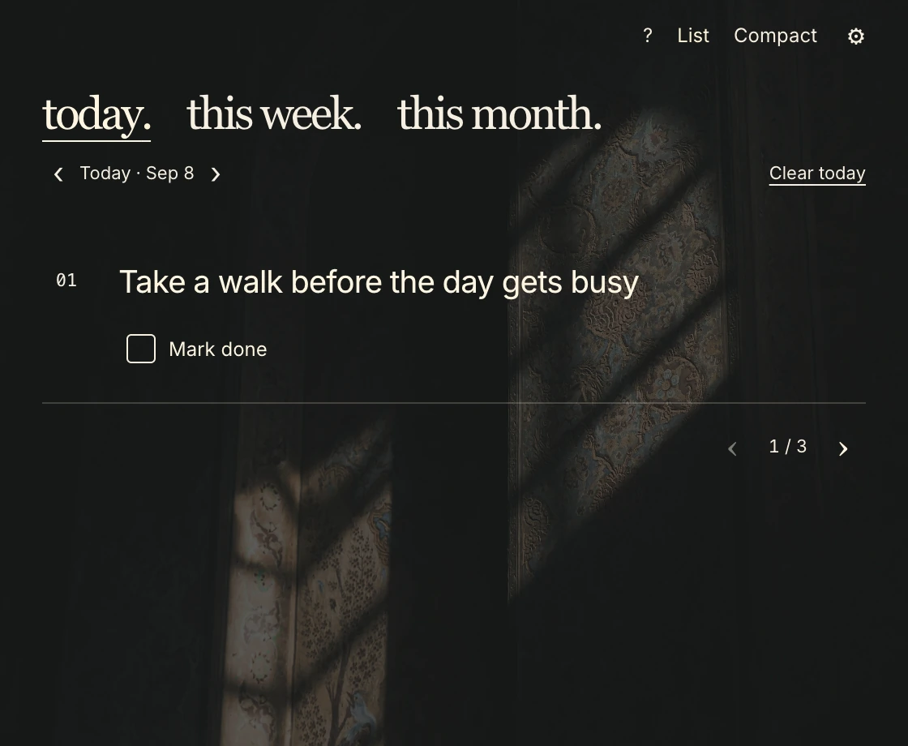

Why I made it.
I wanted a small place to keep the few things I actually meant to do. Not another system to organize, and not a longer list to feel behind on.
So I made Three Things. Choose a few priorities. Keep them close. Give one your attention. When they are done, let that count.
— Bud
